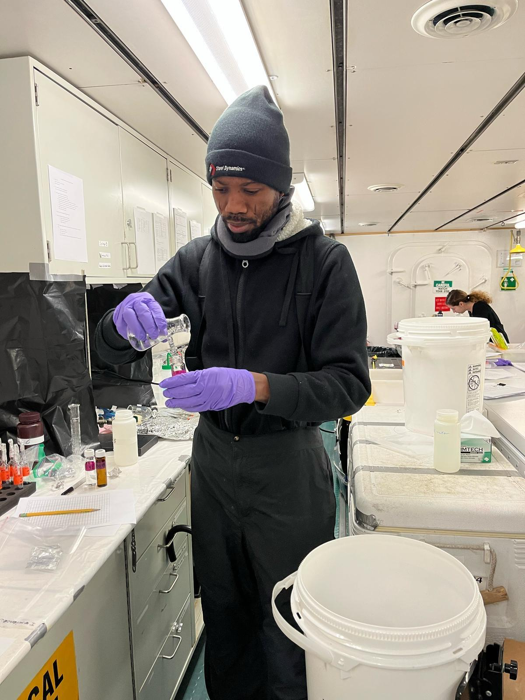
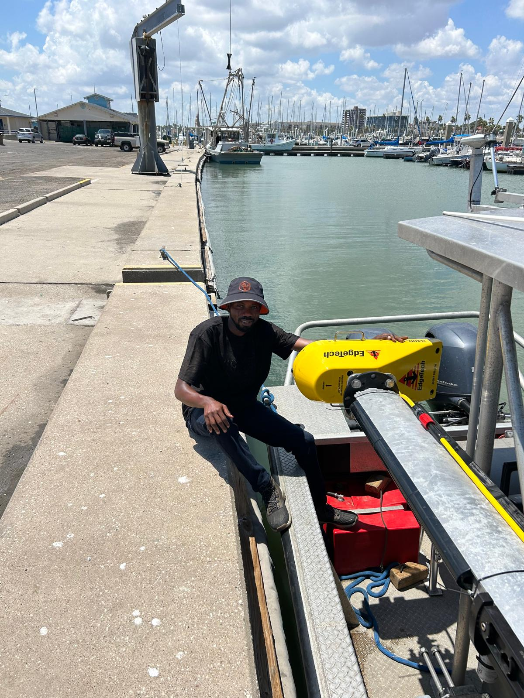
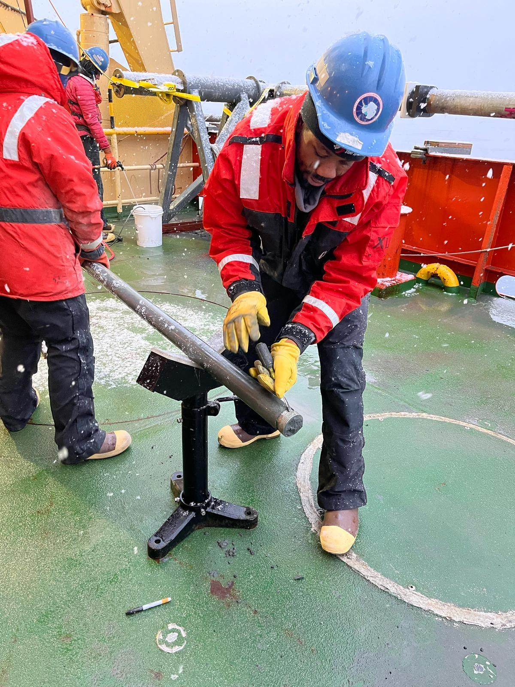
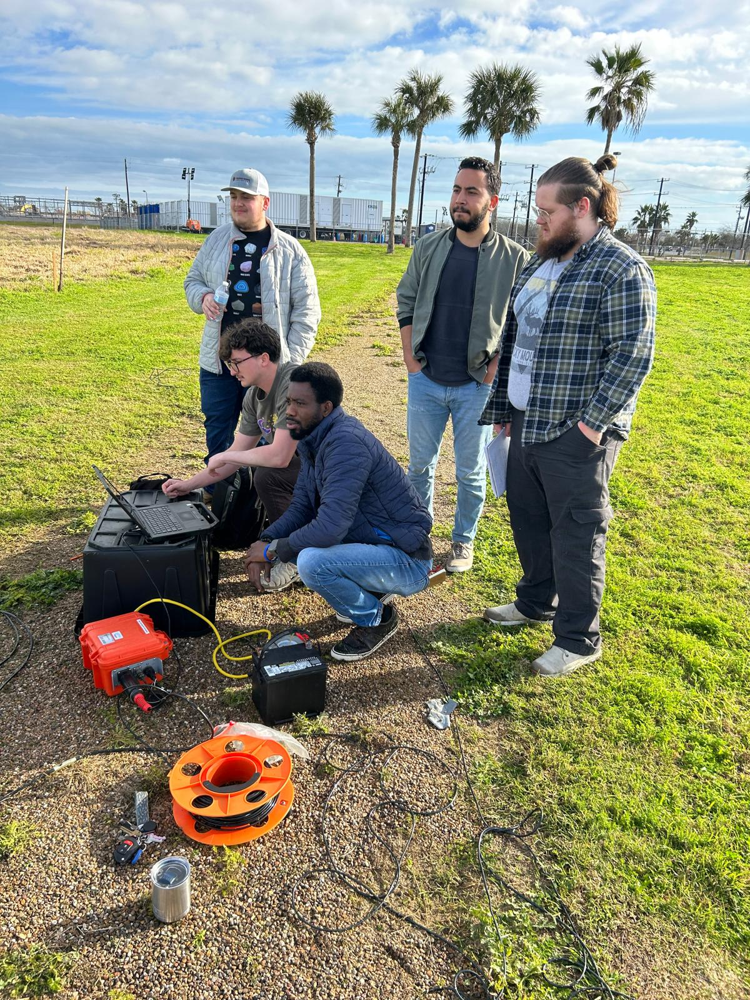
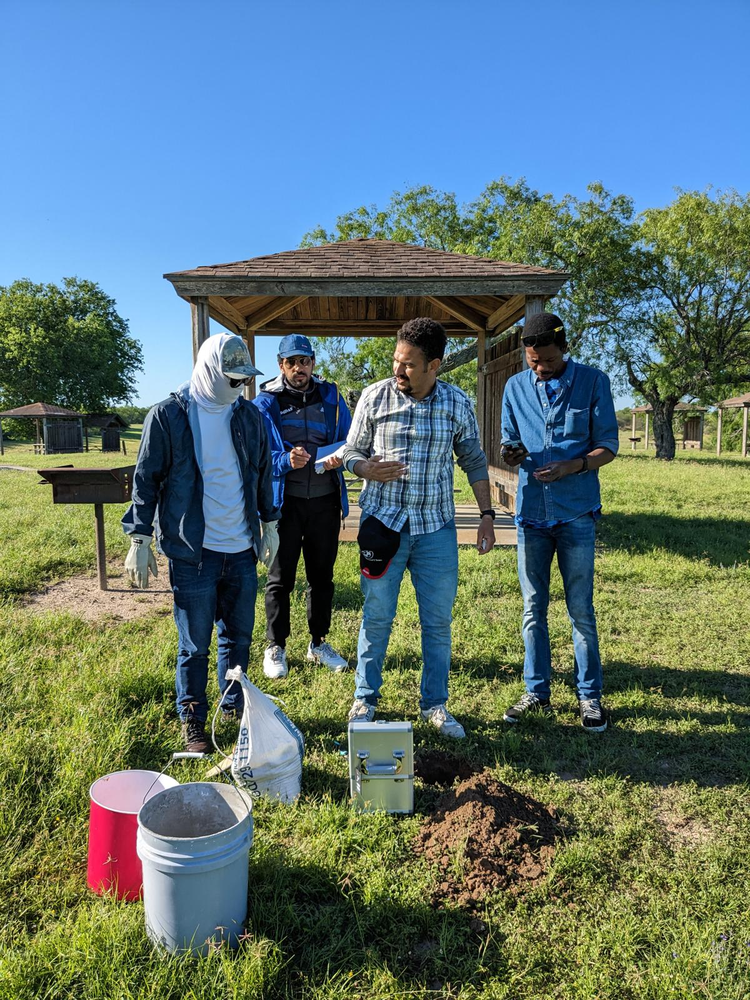
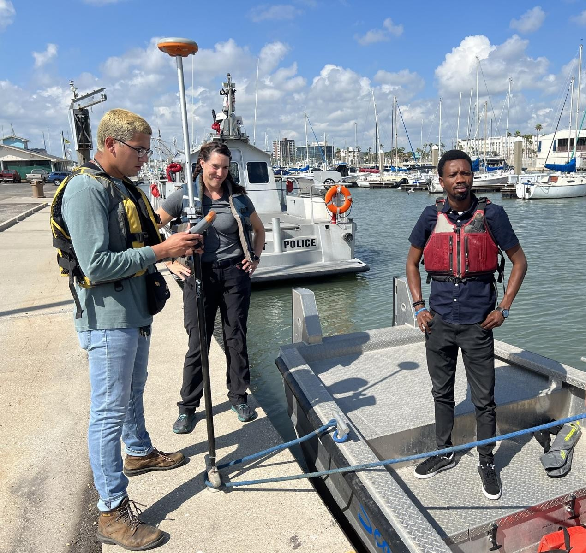

About
I am a geoscientist and a Ph.D. candidate in Geophysics from Texas A&M University–Corpus Christi. I specialize in gas hydrate modeling, reservoir characterization, static and dynamic modeling, and reactive transport modeling (RTM). I have gained practical experience through seismic data acquisition and interpretation, well log analysis, and research cruises to the Mediterranean Sea, Dead Sea, Corpus Christi Bay, and the Ross Sea in Antarctica. With a diverse background in geophysics and marine geoscience, I bring broad expertise in data acquisition, processing, and interpretation using near-surface geophysical methods such as electrical resistivity tomography (ERT), ground penetrating radar (GPR), FDEM, TDEM, and other techniques including gravity and magnetics.
Research Highlights






Current Focus
Ongoing research focuses on mixed hydrate modeling for gas production and carbon sequestration in the Gulf of Mexico, assessing CO₂ leakage impacts on near-seafloor biogeochemical processes using multiscale reactive transport modeling and numerical simulation, and CO₂ hydrate modeling for sealing potential in shallow marine sediments.